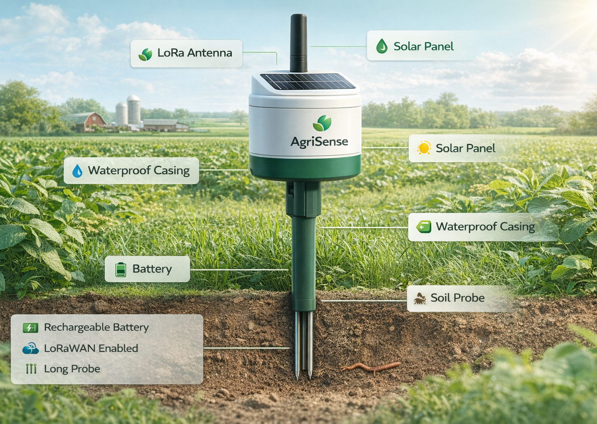
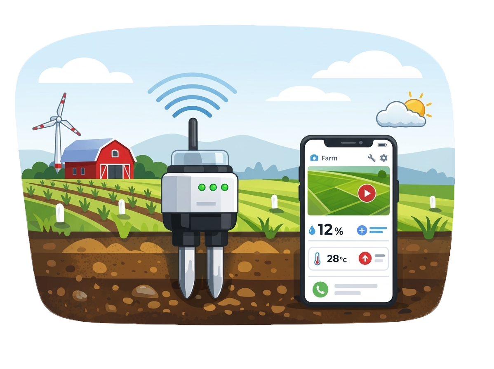
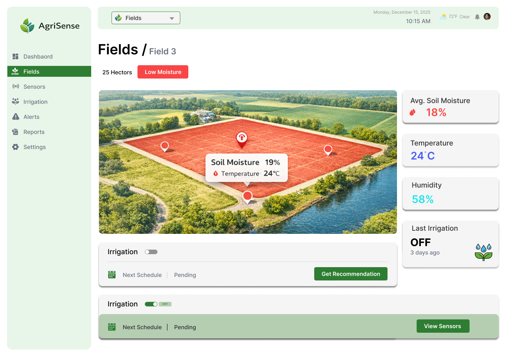
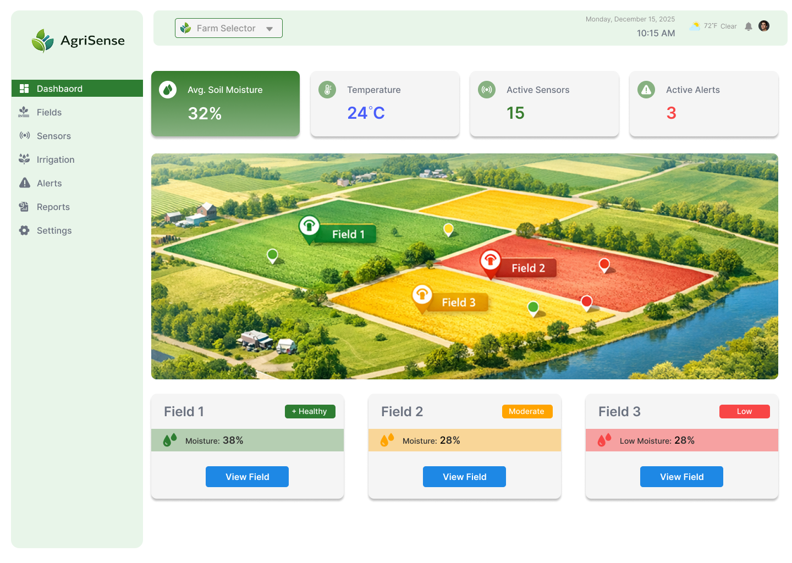

AgriSense enables farmers to monitor soil moisture, weather conditions and irrigation across fields using smart IoT sensors and a powerful dashboard.

Farmers face several challenges due to lack of real-time insights, inefficient irrigation, and unpredictable weather conditions.
Traditional irrigation wastes water and reduces efficiency.
Farmers cannot monitor soil moisture instantly.
Crop issues are detected only after damage begins.
Unexpected weather impacts crop yield and irrigation.


AgriSense connects smart sensors across your farm to a central dashboard, providing real-time insights into soil moisture, weather conditions, and irrigation performance.
AgriSense provides advanced tools to monitor soil health, optimize irrigation, and improve crop productivity.
Monitor soil moisture, temperature, and humidity in real time.
View farm zones and sensor locations on an interactive field map.
AI-powered irrigation scheduling based on soil and weather conditions.
Analyze seasonal trends and crop performance.
See how smart monitoring helps farmers save water and improve crop productivity.
Farms Connected
Sensors Deployed
Water Saved
Crop Yield Increase
Track soil moisture, weather conditions, and irrigation performance from a single intelligent dashboard designed for modern farming.

AgriSense connects smart sensors to a powerful cloud platform, allowing farmers to monitor and manage their fields in real time.
Sensors are installed across the farm to measure soil moisture and environmental data.
Sensor data is transmitted wirelessly through a LoRa gateway.
Data is processed in a cloud IoT platform for analytics and insights.
Farmers monitor data and irrigation recommendations via dashboard or mobile.
Sensors
Gateway
Cloud
Dashboard
Farmers using AgriSense are improving irrigation efficiency and crop productivity.
“AgriSense helped us reduce water waste and improve crop yield. The real-time dashboard makes farm management simple and efficient.”
“With soil moisture alerts and irrigation recommendations, we now water crops only when necessary. It has saved both time and water.”
“The sensor monitoring system gives us complete visibility of soil conditions across fields. It’s like having a smart farm assistant.”
Monitor your farm in real time and make better decisions with AgriSense.